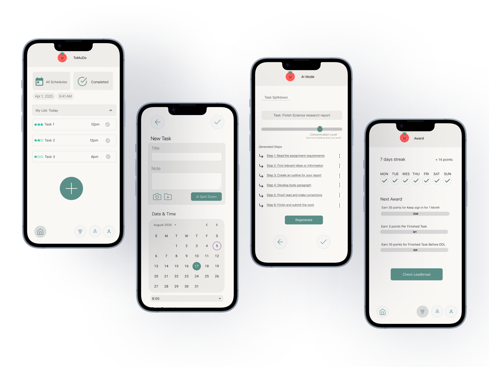
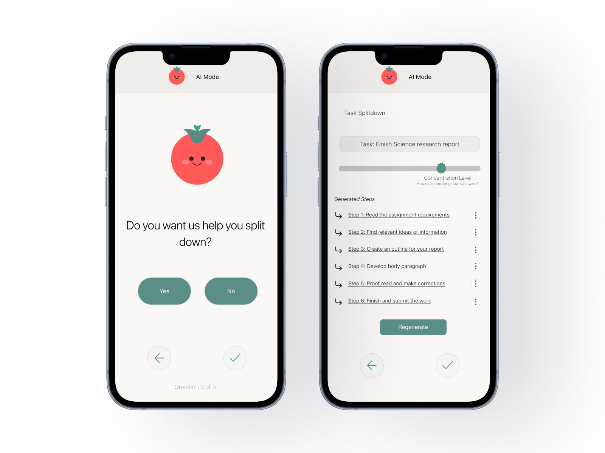
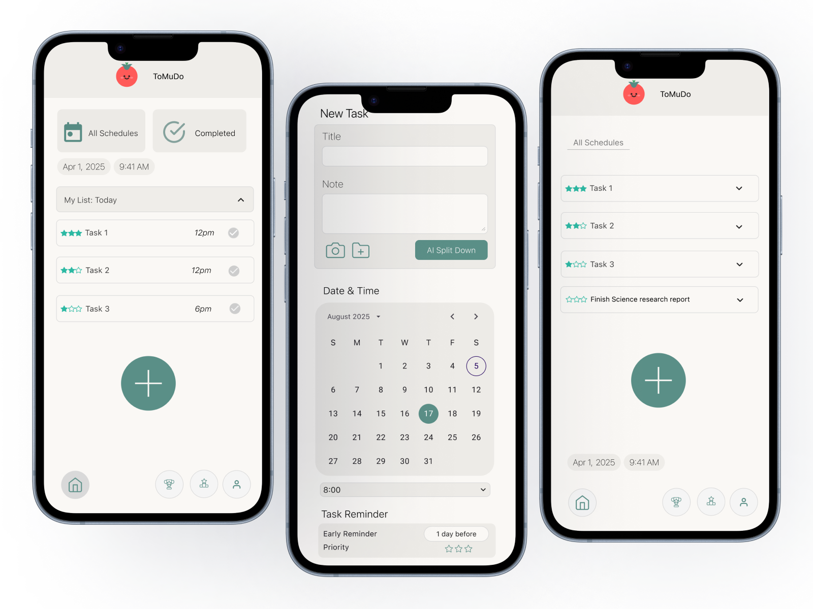
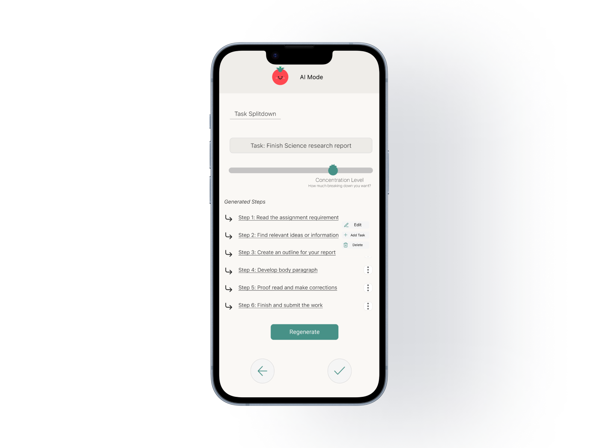
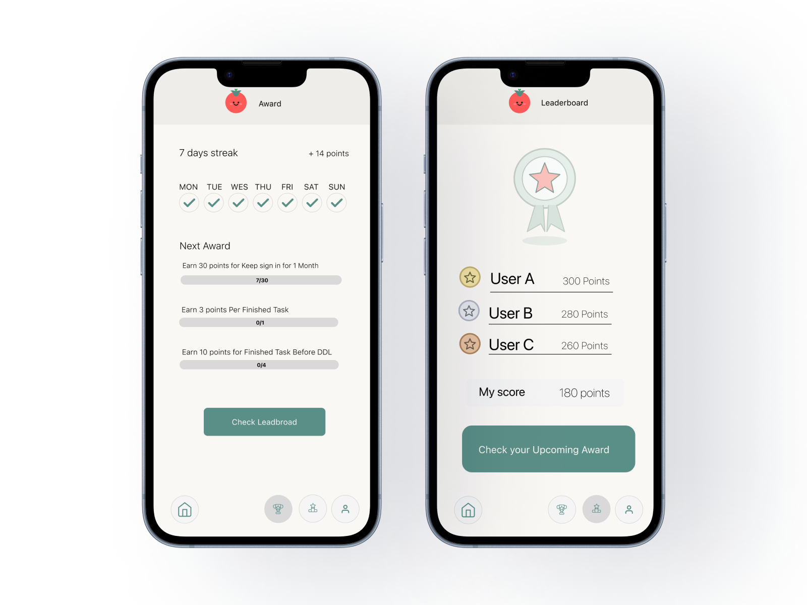

ToMuDo
Reducing task overwhelm through guided breakdown
ToMuDo is a mobile task management experience that helps students and young professionals overcome starting friction by breaking complex tasks into actionable steps.
View Interactive Prototype ↗Why This Project
People do not always struggle because they cannot plan. They struggle because they cannot start.
Most productivity tools help users organize work after they already know what to do. ToMuDo explores how AI-assisted guidance can reduce task initiation friction by turning overwhelming work into a clear first step.
The Challenge
How might we help overwhelmed students move from “I don’t know where to start” to “I know my next step”?
No clear first step
Existing task tools require too much manual setup
Research Overview
I started by understanding why students delay tasks even when they know the deadline.
Cognitive Load
Fogg Behavior Model
Self Determination Theory
Literature review
Connected task initiation, motivation, and ambiguity.
Microsoft To Do
PlanCoach
Competitive audit
Compared task setup, AI support, and progress cues.
8
Interviews
Semi-structured conversations about planning, task anxiety, and starting friction.
Key Findings
The research shifted the focus from motivation to clarity.
Competitive Audit
Microsoft To Do tracks tasks, but assumes users already know what steps to create.
Goblin.tools breaks tasks down, but does not connect breakdowns to scheduling or progress.
PlanCoach provides planning structure, but feels less integrated into daily execution.
Existing tools help users manage tasks after clarity already exists.
Design implication ToMuDo should help users create clarity before asking them to manage it.
Interview Finding
“If instructions are clear, I start earlier.”
Users don't avoid work. They avoid unclear first steps.
Design implication Design should make the next action immediately visible.
Interview Finding
“I know I need to do it, but I don't know how to break it down.”
Planning itself becomes a task when the work feels too large.
Design implication AI guidance should reduce setup effort by suggesting a starting structure.
Behavioral Pattern
Generic reminders were easy to ignore, while simple progress cues helped users feel control.
Progress works when it feels supportive, not punitive.
Design implication Motivation should make progress visible without adding pressure.
Problem Reframing
Research changed the product direction.
Students procrastinate because they lack motivation.
→
The blocker was not effort, but ambiguity at the beginning.
→
Make the first step clear, concrete, and easy to start.
Design direction
Instead of motivating users harder, ToMuDo makes starting easier.
Design Principles
These principles bridged research and the final product experience.
Three recurring themes emerged from the research and became the foundation for every design decision.
Reduce Friction
Make the first action visible, specific, and low-effort.
Increase Predictability
Help users understand what happens next, especially in AI flows.
Support Motivation
Use progress cues as reassurance, not another demand.
Evidence → Design
Each product feature maps back to a research finding.
Research finding
Design principle
Design direction
Product feature
Large tasks feel vague and undefined.
Reduce Friction
Make the first step concrete.
AI Task Breakdown
Users need to understand what AI is doing.
Increase Predictability
Make the flow predictable and editable.
Editable Step Control
Progress is motivating when it feels calm.
Support Motivation
Show momentum without creating pressure.
Gentle Motivation
Design Highlights / Final Experience
The final experience helps users move from “too much” to “I know what to do next.”
The following design decisions translate research insights into a product experience that helps users move from uncertainty to action.

AI Task Breakdown
- Insight
- Users struggled most when a task felt vague, undefined, and too large to begin.
- Design Response
- AI Mode turns a complex task into concrete, ordered steps with lightweight guidance.
- Experience
- Instead of facing the whole project at once, users can begin with one smaller action.

Task Scheduling
- Insight
- Guidance becomes more useful when users can connect steps to a specific time or deadline.
- Design Response
- The task creation flow includes date and time inputs before placing work into the schedule.
- Experience
- Breakdowns become actionable plans that fit into the user’s day, not just another list.

Editable Step Control
- Insight
- Users were more willing to trust AI support when they could see and shape the output.
- Design Response
- Generated steps are editable, adjustable, and supported by a Regenerate option.
- Experience
- Users keep control of the plan while still receiving structure from AI.

Gentle Motivation
- Insight
- Visible progress helped users feel momentum, but heavy rewards risked creating pressure.
- Design Response
- Streaks, awards, and progress bars make progress visible without adding extra tasks.
- Experience
- The product supports consistency with a calm, reassuring tone instead of pressure.
Iteration Highlights
Usability testing helped convert friction into focused design changes.
Reflection
What ToMuDo taught me about designing for overwhelm.
- This project reframed how I think about productivity: the core issue was not simply procrastination, but task initiation friction.
- I learned that AI support becomes more useful when users can understand, edit, and control the output instead of passively accepting automation.
- If I continued this project, I would further test AI transparency, accessibility, and personalized planning patterns across different working styles.
Prototype
Explore the final ToMuDo prototype.
Click through the final mobile experience and see how task breakdown, scheduling, and motivation work together.